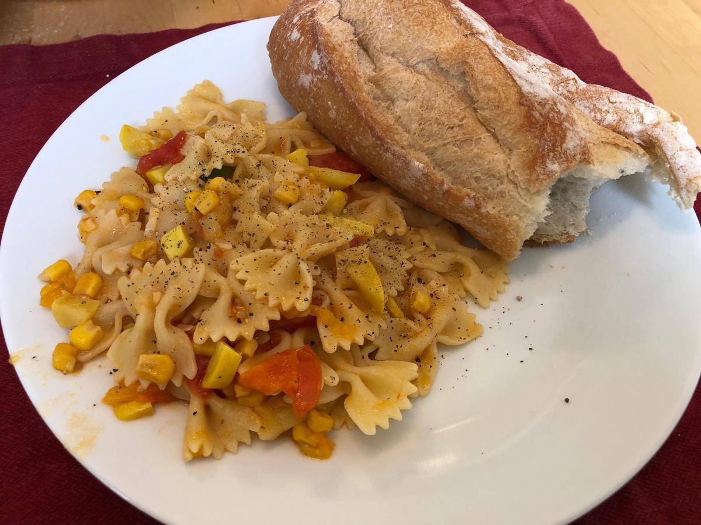

Based on https://cooking.nytimes.com/recipes/11305-pasta-with-corn-zucchini-and-tomatoes
Personal rating: 3 / 5

Salt and pepper
3 Tbsp extra virgin olive oil
1 cup corn kernels (from 2-3 ears) or 1 can
1 cup diced zucchini or summer squash (from 2 or 3 small vegetables)
1 medium onion or 3-4 shallots, diced
1-2 sprigs tarragon
4 plum or 2 large tomatoes, diced
1 pound cut pasta, like Farfalle or penne